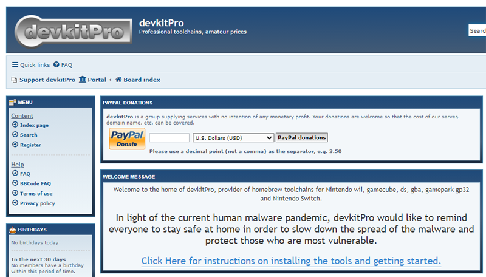
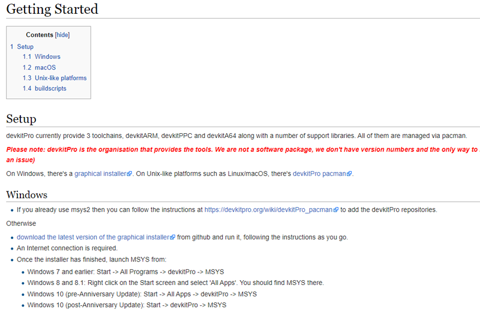
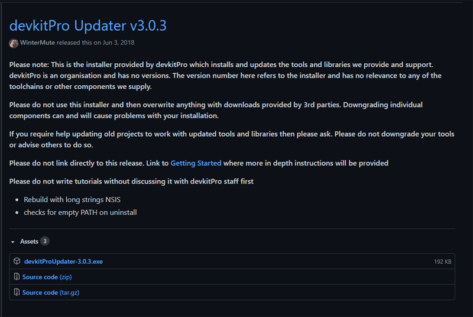
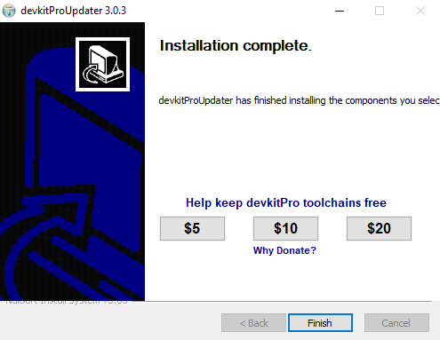
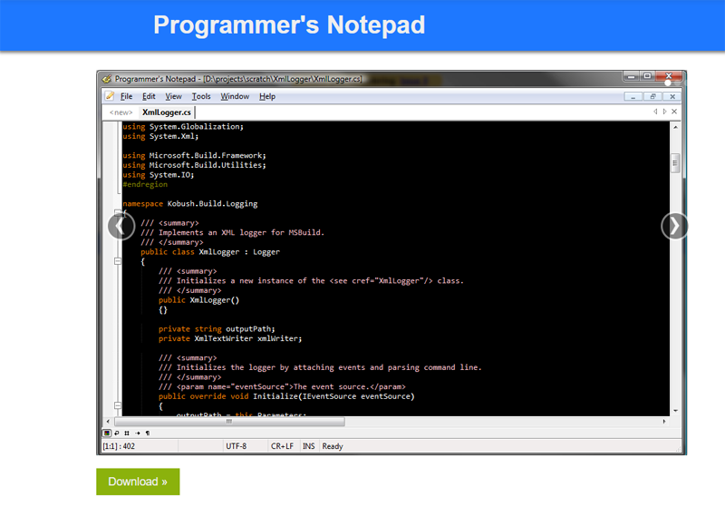
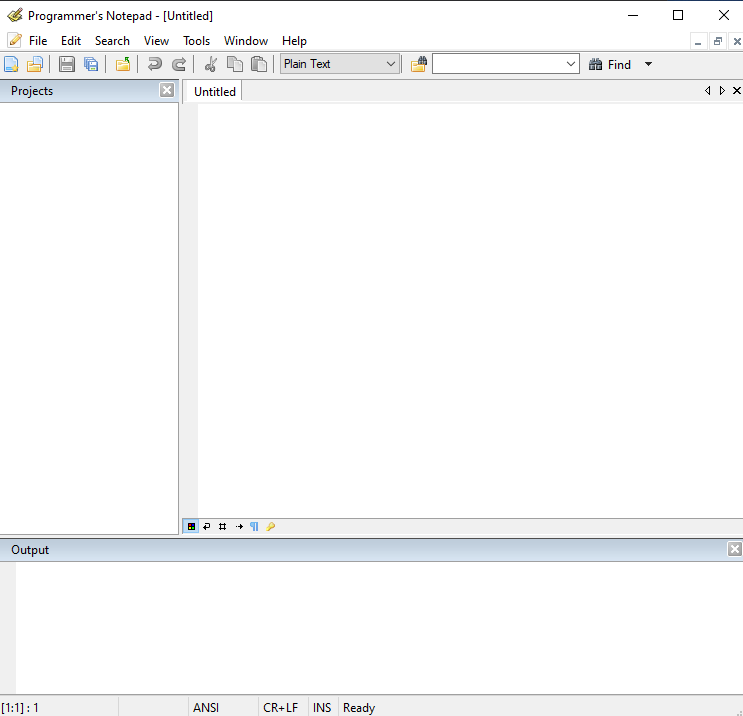
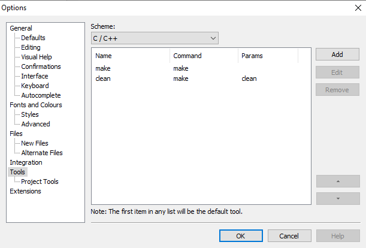
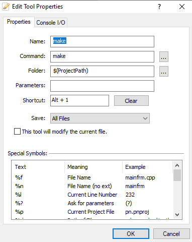
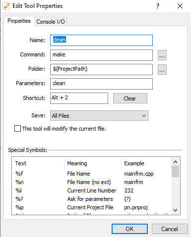

If you're new to this site, then this should be the first thing you do. You can't do any of the projects unless you set up your environment first. I have tried to make it as easy as possible for you to get up and running. You just need to follow the steps below and you should be good to go. Make sure you run the test program at the end and that it compiles successfully before moving on to any of the projects.
1. Get DevkitPro
Go to the devkitpro website and click on the blue underlined link shown above to be taken to the next window.
TIP
Devkitpro is the site that contains the toolchains needed to compile and make Gameboy Advance games. Click on the button below to go to the site in a new tab.
Go
If you prefer to just go directly to the link shown in the window then click on the button below instead. Once you do, you can go directly to step 2.
Go
2. Get DevkitPro Part 2
The above page will have links to download the devkitpro installer for Windows, Mac, and Unix systems. If you're following along with a Windows machine then you can click on the 'download the latest version of the graphical installer' link shown above, or just click on the button in the sidebar on the right.
TIP
Go directly to github and download the latest Windows installer by clicking on the button below.
Go
3. Get DevkitPro Part 3
Once you're on the Github site, follow the instructions to download the latest version of devkitpro.
TIP
Go directly to github and download the latest Windows installer by clicking on the button below.
Go
4. Get DevkitPro Part 4
Once you have the installer downloaded onto your machine, double-click it or do whatever you do to launch the executable. Simply follow the wizard instructions as you normally would. The process can take a few minutes to complete.
TIP
Go directly to github and download the latest Windows installer by clicking on the button below.
Go
5. Get Programmer's Notepad Part 1
The Programmer's Notepad is a great code developement environment that supports a wide range of languages. It's the one that I will be using throughout all of the projects. You can use whatever you're most comforatable with, I just won't be able to help with any issues you may experience with some other program. I would suggest you just use the Programmer's Notepad while you're working on these projects and then use whatever you want for your own projects once you've gained some experience.
6. Get Programmer's Notepad Part 2
Once you download and install the Programmer's Notepad, launch the program and you should see an empty window like the one above.
TIP
This will be the first thing you see after launching the Programmer's Notepad, a blank slate.
7. Get Programmer's Notepad Part 3
In the top menu click on Tools, then choose Options at the bottom. The displayed window will open up.
In the left menu near the bottom choose 'Tools'.
By default the scheme should be 'None - Global Tools'. Change this to C / C++ from the dropdown menu. It should show an empty window, we will make the follow 2 tools shown, however.
TIP
Tools -> Options
In Tools tab choose Scheme to C/C++
8. Make Tool
The first tool we'll make is called 'make'. This tool will allow us to compile our programs into something the Gameboy Advance can read. The shortcut we will use to use this tool is Alt + 1. Just copy what you see here.
TIP
Alt + 1
9. Clean Tool
The clean tool is similar to the make tool, again just copy what you see here. This tool doesn't do any compiling, it just deletes any of the build files from the last time you compiled your program. It's not absolutely necessary as the make tool will just overwrite the last compiled files, but it is good practice to run a clean before running a make.
TIP
Alt + 2
10. Testing
Now we need to make sure everything is working and installed properly. To do that we will create an empty project that has the bare minimum code needed to compile a project. Then we'll see if everything compiles just fine.
First, create an empty project by following the steps outlined in the link on the right. I will provide this link to this page at the start of every project.
Once you've created an empty project, copy the code you see above into the default file and save it inside the source folder in your empty project. Name the file main.cpp.
11. Testing
Once you have created and saved the main.cpp file into the correct location, then simply press the Alt + 1 keys to compile the project.
If all goes well you should see following or similar text in the Output screen. If so, then you are good to go! Congrats!
TIP
If you get a compile error, then check that you are using the correct Makefile. The correct Makefile should have been included with devkitpro, but in the case it was not then click the button below to go where you can get the correct version.
Go
Conclusion
If you can successfully compile this simple project, then you should be good to go with the rest of the projects on this site.